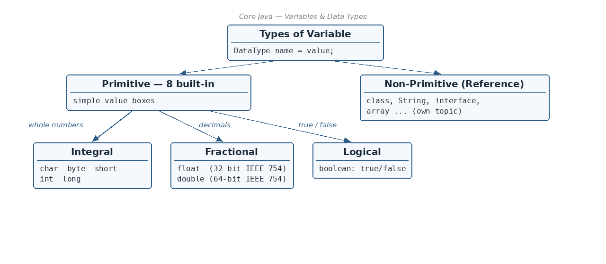

What is a variable?
☕ 16 min read · 🎬 Video walkthrough · 📊 UML diagram · 💻 Runnable code
⚡ In a nutshell — What a variable is and the rules for naming it · All 8 primitive data types with their sizes and ranges · How negative numbers are stored (2's complement) · Widening and narrowing conversion, casting, and the "wraparound" surprise
A variable is a container which holds a value. Think of it like a labelled box: the label is the variable name, and inside the box you keep a value.

The general pattern is:
DataType variableName = value;
int x = 10; // a box named "x" that stores the whole number 10
These two phrases appear together in the notes. They mean two slightly different things:
int x = 10;, the word int announces: "this box will only ever hold whole numbers."int can hold 100 easily, but it cannot hold a number bigger than its maximum range, and it will never silently accept text.Remember: In Java, every variable has a fixed type, decided at the moment you declare it, and Java checks it for you at compile time.
These are the rules (and good manners) for naming variables:
age and Age are two different variablestotal1, résumé$, or _ — _abc ✔, $abc ✔9abc ✘ (not allowed)int, class, for ✘salary, employeeSalarystatic final int JAIPUR = 2;public class NamingDemo {
static final int MAX_STUDENTS = 60; // constant -> CAPITALS
public static void main(String[] args) {
int age = 25; // one word -> all small
int employeeSalary = 5000; // two words -> camelCase
int _abc = 1; // OK, starts with underscore
int $abc = 2; // OK, starts with dollar sign
// int 9abc = 3; // ERROR: cannot start with a digit
// int class = 4; // ERROR: 'class' is a reserved keyword
System.out.println(age + " " + employeeSalary + " " + MAX_STUDENTS);
}
}
// Output:
// 25 5000 60
The notes draw this family tree:
Types of Variable
/ \
Primitive Non-Primitive
/ | \ (Reference types:
Integral Fractional class, String,
char, (floating) Interface, Array...)
byte, float,
short, double
int,
long + boolean
In plain words: primitive types are the simple built-in boxes (numbers, characters, true/false). Everything else (objects, Strings, arrays) is non-primitive. This topic focuses on the primitives; non-primitives get their own topic.
Java has exactly 8 primitive types. Here they all are in one table:
char — 2 bytes (16 bits) — 0 to 65,535 — '�' — Character; unsignedbyte — 1 byte (8 bits) — -128 to 127 — 0 — Signed 2's complementshort — 2 bytes (16 bits) — -32,768 to 32,767 — 0 — Signed 2's complementint — 4 bytes (32 bits) — -2^31 to 2^31 - 1 — 0 — Signed 2's complementlong — 8 bytes (64 bits) — -2^63 to 2^63 - 1 — 0 — Signed 2's complementfloat — 4 bytes (32 bits) — IEEE 754 value — 0.0f — Fractionaldouble — 8 bytes (64 bits) — IEEE 754 value — 0.0d — Fractionalboolean — 1 bit of information — true / false — false — LogicalRemember: The default value only applies to class member variables. A local variable inside a method has NO default — Java forces you to assign it before use.
char is the only unsigned numeric type.You can assign a character directly, or assign its number — both work:
public class CharDemo {
public static void main(String[] args) {
char var1 = 'a'; // assign the character itself
System.out.println(var1);
char var2 = 65; // assign the ASCII number: 65 is 'A'
System.out.println(var2);
char var3 = 97; // 97 is 'a'
System.out.println(var3);
}
}
// Output:
// a
// A
// a
(Small correction to the handwritten note: ASCII 65 is capital 'A'; lowercase 'a' is 97.)
Why -128 to 127 and not 0 to 255? Because one bit is reserved for the sign:
[0] _ _ _ _ _ _ _ <- first bit 0 => the number is positive (+)
[1] _ _ _ _ _ _ _ <- first bit 1 => the number is negative (-)
With 8 bits you can make 256 patterns (0–255). Java splits them: half for negatives (-128 to -1) and half for zero and positives (0 to 127).
How 2's complement works — a tiny 4-bit example from the notes. Say we only have 4 bits. The place values are:
2^3 2^2 2^1 2^0
8 4 2 1
+3 = 0 0 1 1 (8*0 + 4*0 + 2*1 + 1*1 = 3)
To get -3:
Step 1: flip every bit of +3: 0011 -> 1100
Step 2: add 1: 1100 + 1 = 1101
-3 = 1 1 0 1 <- this is the 2's complement of 3
So a computer never stores a minus sign; it stores this special flipped-and-plus-one pattern. The leading 1 tells us it is negative.
char, byte, short, int, long together form the integral types (whole numbers). Everything up to here is integral.public class IntegralDemo {
public static void main(String[] args) {
byte b = 100;
short s = 30000;
int i = 2000000000;
long l = 9000000000L; // note the L suffix for long literals
System.out.println(b + " " + s + " " + i + " " + l);
}
}
// Output:
// 100 30000 2000000000 9000000000
float is a 32-bit IEEE 754 value: float var = 0.3f; (the f suffix is required).double is a 64-bit IEEE 754 value: double var = 0.6d; (the d is optional; double is the default).IEEE 754 is the international standard describing how a decimal number is packed into bits — Part 5 explains it fully.
The famous precision surprise from the notes:
public class FloatSurprise {
public static void main(String[] args) {
System.out.println(0.3f - 0.1f);
}
}
// Output:
// 0.20000002 <- NOT exactly 0.2 !
Why not exactly 0.2? Because 0.3 and 0.1 cannot be stored exactly in binary (Part 5 shows why), so tiny errors creep in and show up in the answer.
Remember: We never use
float/doublein industry for money or exact calculations. Instead useBigDecimal(the notes say BigInteger —BigIntegeris for huge whole numbers; for exact decimal values like money the correct class isBigDecimal).
import java.math.BigDecimal;
public class MoneyDemo {
public static void main(String[] args) {
BigDecimal price = new BigDecimal("0.3");
BigDecimal tax = new BigDecimal("0.1");
System.out.println(price.subtract(tax));
}
}
// Output:
// 0.2 <- exact, no surprise
true or false.false.public class BooleanDemo {
public static void main(String[] args) {
boolean isJavaFun = true;
System.out.println(isJavaFun);
}
}
// Output:
// true
Sometimes a value needs to move from one type of box to another. There are two directions.
If the value goes from a lower (smaller) type to a higher (bigger) type, Java converts it automatically. Nothing can be lost — a small value always fits in a bigger box, like pouring a cup of water into a bucket.
The automatic-conversion ladder:
byte -> short -> int -> long -> float -> double
(small ------------------------------------------> big)
public class WideningDemo {
public static void main(String[] args) {
int var = 10;
long varLong = var; // int -> long : automatic, no cast needed
byte b = 10;
int var2 = b; // byte -> int : automatic conversion
System.out.println(varLong + " " + var2);
}
}
// Output:
// 10 10
Going from higher to lower does NOT happen automatically — a bucket of water might not fit in a cup. Java refuses unless you explicitly take responsibility with a cast: (targetType) value.
public class NarrowingDemo {
public static void main(String[] args) {
int x = 10;
// byte b = x; // COMPILE ERROR: higher to lower not allowed
byte b = (byte) x; // works: we explicitly cast
System.out.println(b);
}
}
// Output:
// 10
But there is one issue: wraparound. If the value is too big for the small box, the extra part is chopped off and the number "wraps around" the range:
public class WraparoundDemo {
public static void main(String[] args) {
int x = 128; // byte range is only -128 to 127
byte b = (byte) x;
System.out.println(b);
}
}
// Output:
// -128 <- because 128 is out of range!
Why -128? Think of the byte range as a circle: ... 126, 127, then it wraps back to the start: -128, -127... So one step past 127 lands on -128.
... 125 126 127
|
(go one more)
v
-128 -127 -126 ... <- wrapped around!
Example 1 — byte + byte. Even when both values fit in bytes, this fails:
byte a = 127;
byte b = 1;
byte sum = a + b; // COMPILE ERROR!
Why? During an expression, if the result can cross the range, Java does an internal promotion: a + b is calculated as an int (127 + 1 = 128 — out of byte range, so promotion protects us). An int result cannot silently go back into a byte box.
Two ways to fix it:
public class PromotionDemo {
public static void main(String[] args) {
byte a = 127;
byte b = 1;
int sum1 = a + b; // Fix 1: store the promoted result in an int
System.out.println(sum1);
byte sum2 = (byte) (a + b); // Fix 2: down-cast — but beware wraparound
System.out.println(sum2);
}
}
// Output:
// 128
// -128 <- the cast chopped it, wrapping to -128
Example 2 — int + double. In a mixed expression, the smaller type is promoted to the bigger one, so the result takes the bigger type:
public class MixedExpressionDemo {
public static void main(String[] args) {
int a = 34;
double var = 20d;
// int sum = a + var; // FAILS: a+var is a double expression
double sum1 = a + var; // Fix 1: use double for the result
int sum2 = (int) (a + var); // Fix 2: explicitly cast down to int
System.out.println(sum1);
System.out.println(sum2);
}
}
// Output:
// 54.0
// 54
Remember: small → big is free and automatic. big → small needs a
(cast)and may wrap around. Inside any math expression, everything is promoted at least toint, and to the biggest type present.
Depending on where a variable is declared, it gets a different name and different behaviour. All four kinds in one class:
public class Employee {
static int staticVariable = 100; // (1) static / class variable
int memberVariable; // (2) member / instance variable
public void dummyMethod() {
byte localVariable = 100; // (3) local variable
System.out.println(localVariable);
}
public int dummyMethod2(int a, int b) { // (4) a and b: method parameters
return (a + b);
}
Employee() { } // no-arg constructor
Employee(int a) { } // parameterised constructor ('a' is a parameter too)
}
Declared inside the class but outside any method. Every object gets its own personal copy.
class Employee {
int memberVariable = 10;
}
public class MemberDemo {
public static void main(String[] args) {
Employee ob1 = new Employee();
Employee ob2 = new Employee();
ob1.memberVariable = 99; // change only ob1's copy
System.out.println(ob1.memberVariable);
System.out.println(ob2.memberVariable); // ob2's copy is untouched
}
}
// Output:
// 99
// 10
+--------------+ +--------------+
| ob1 | | ob2 |
| memberV = 99 | | memberV = 10 |
+--------------+ +--------------+
Each object has its OWN copy of the member variable.
Declared with the keyword static. It is associated with the class itself, not with objects. No matter how many objects you create, only one copy exists, and everyone shares it.
class Counter {
static int var = 10;
}
public class StaticDemo {
public static void main(String[] args) {
Counter ob1 = new Counter();
Counter ob2 = new Counter();
Counter.var = 50; // change the single shared copy
System.out.println(Counter.var);
}
}
// Output:
// 50
+----------+
| var = 50 | <- ONE shared copy, lives with the class
+----------+
^ ^
| |
+-----+--+ +-+------+
| ob1 | | ob2 | both objects point to the SAME var
+--------+ +--------+
Created inside a method, and its scope is only within that method. The moment the method ends, the variable disappears. It has no default value — you must assign it before use.
public void dummyMethod() {
byte localVariable = 100; // exists only while dummyMethod runs
System.out.println(localVariable);
}
The variables listed inside the parentheses of a method (or constructor). They receive the values you pass when calling.
int dummyMethod(int x, int y) { ... } // x and y are method parameters
Employee(int a) { } // parameterised constructor —
// 'a' is its parameter
The question: how does a decimal number like 4.125 actually live inside 32 bits of memory? The answer is the IEEE 754 standard.
A float (32 bits) is split into three fields:
+--------+------------+---------------------------+
| 1 bit | 8 bits | 23 bits |
| Sign | Exponent | Mantissa / significand |
+--------+------------+---------------------------+
0 means positive (+), 1 means negative (-).1. (the leading 1 is not stored — it is always assumed).A double works exactly the same way, just bigger: 1 sign bit, 11 exponent bits (bias 1023), 52 mantissa bits.
Step 1 — Convert to binary.
Whole part: divide 4 by 2 repeatedly and read the remainders bottom-up:
2 | 4 remainder 0
2 | 2 remainder 0
1
=> 4 (decimal) = 100 (binary)
Fraction part: multiply .125 by 2 repeatedly and collect the digit before the decimal point:
.125 x 2 = 0.25 -> 0
.25 x 2 = 0.50 -> 0
.50 x 2 = 1.00 -> 1 (fraction is now 0, we stop)
=> .125 = .001 (binary)
So 4.125 = 100.001 in binary.
Step 2 — Write it in exponent form (1.xxx × 2^n).
Slide the point left until only a single 1 remains before it:
100.001 = 1.00001 x 2^2
mantissa = 00001, exponent = 2
Step 3 — Add the bias to the exponent.
127 + 2 = 129
129 in binary (using 128 64 32 16 8 4 2 1) = 1000 0001
Step 4 — Pack the three fields.
+---+-----------------+-----------------------------+
| 0 | 1 0 0 0 0 0 0 1 | 0 0 0 0 1 0 0 0 0 ... 0 |
+---+-----------------+-----------------------------+
sign exponent mantissa (23 bits)
This is exactly how 4.125f sits in memory.
Checking it in reverse. The decoding formula is:
value = (-1)^sign x (1 + mantissa) x 2^(e - 127)
= (-1)^0 x (1 + 1/32) x 2^(129 - 127)
= 1 x (1 + 0.03125) x 2^2
= 1.03125 x 4
= 4.125 <- we got our number back, EXACTLY
(The 1/32 comes from the single mantissa bit in position 5: 1/2^5 = 1/32 = 0.03125.)
4.125 survives perfectly because its binary form 100.001 terminates — it needs only a few bits.
Step 1 — Convert 0.7 to binary. Multiply by 2, collect the whole digit each time, keep the fraction:
.7 x 2 = 1.4 -> 1 (keep .4)
.4 x 2 = 0.8 -> 0 (keep .8)
.8 x 2 = 1.6 -> 1 (keep .6)
.6 x 2 = 1.2 -> 1 (keep .2)
.2 x 2 = 0.4 -> 0 (keep .4) <- .4 again! we've been here before
.4 x 2 = 0.8 -> 0
.8 x 2 = 1.6 -> 1
.6 x 2 = 1.2 -> 1
...forever...
=> 0.7 = .1011 0011 0011 0011 ... (the pattern 0011 repeats FOREVER)
This is the key moment: 0.7 in binary never ends, just like 1/3 = 0.3333... never ends in decimal. But a float has only 23 mantissa bits — so the tail must be cut off. That cut is the precision loss.
Step 2 — Exponent form.
.10110011... = 1.0110 0110 0110 ... x 2^(-1)
Step 3 — Add the bias.
127 + (-1) = 126 -> 0111 1110 in binary
Step 4 — Pack the fields (mantissa chopped at 23 bits).
+---+-----------------+---------------------------+
| 0 | 0 1 1 1 1 1 1 0 | 0110 0110 0110 0110 011...|
+---+-----------------+---------------------------+
sign exponent mantissa (cut at 23 bits)
Now decode it back — what number is REALLY stored?
value = (-1)^sign x (1 + mantissa) x 2^(e - 127)
= (-1)^0 x (1 + *) x 2^(126 - 127)
= 1 x (1 + *) x 2^(-1)
where * = the mantissa bits turned back into a fraction:
* = 1/2^2 + 1/2^3 + 1/2^6 + 1/2^7 + 1/2^10 + 1/2^11 + 1/2^14 + 1/2^15 + ...
= 0.25 + 0.125 + 0.015625 + ...
Adding just the first few terms (as the notes do):
* ≈ 0.399414062
value ≈ 1 x (1 + 0.399414062) x 2^(-1)
≈ 1.399414062 / 2
≈ 0.699707031 <- close to 0.7, but NOT 0.7
Each extra mantissa bit pushes the value closer to 0.7 (with all 23 bits the stored value is about 0.69999998807), but since the true pattern repeats forever, it can never be exactly 0.7.
In plain words: the computer stores the nearest possible binary number to 0.7, not 0.7 itself. That tiny gap is why 0.3f - 0.1f printed 0.20000002 back in Part 2 — the inputs were already slightly "off" before the subtraction even started.
public class Ieee754Demo {
public static void main(String[] args) {
float f = 0.7f;
System.out.println(f); // printed rounded
System.out.println((double) f); // reveal the truth
System.out.println(Float.toHexString(4.125f)); // 4.125 is exact
}
}
// Output:
// 0.7
// 0.699999988079071 <- what is really stored for 0.7f
// 0x1.08p2 <- 4.125 stored exactly (1.03125 x 2^2)
Remember: floats are like writing 1/3 with only 10 decimal places — fine for approximate work, dangerous for money. Terminating binary fractions (0.5, 0.25, 4.125) are exact; most others (0.1, 0.3, 0.7) are not. Use
BigDecimalwhen the exact value matters.
$/_ (never a digit); no keywords; camelCase; constants in CAPITALS.char(2B, 0–65535), byte(1B, -128..127), short(2B), int(4B), long(8B), float(32-bit IEEE 754), double(64-bit IEEE 754), boolean(true/false).(cast) and can wrap around (int 128 → byte -128).(-1)^sign × (1 + mantissa) × 2^(e-127).👏 Found this useful? Give it a few claps so more developers discover it, and follow for the whole series — every article ships with a UML diagram, runnable code, a narrated video, and a companion PDF. Happy building! 🚀